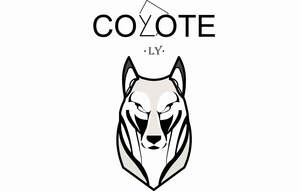

Trade Mark Journal No.2025/041 10 October 2025
UK00004270606 28 September 2025 (37,39,42)

- Class 37
- Building construction; Custom building construction; Building and construction services; Building construction services; Interior refurbishment of buildings; Buildings (Renovation of -); Building refurbishment services; Refurbishment of buildings; Services for the renovation of buildings; Building repair and renovation; Decorating of buildings; Installation of fixtures and fittings for buildings; Building services.
- Class 39
- Removals; Furniture removals; Household removals; Removals (Household -); Commercial furniture removals; Removal services; Removal of domestic furniture; Overseas removal services; Removal services [moving services]; Household removal services; Removal of commercial furniture; Packing of goods for removal; Commercial removal services; Removal of waste; Waste removal; Removal of domestic goods; Waste removal [transport]; Clearance [removal and transportation] of waste; Removal of household goods; Removal of office equipment; Moving van services; Temporary storage of deliveries; Packing services.
- Class 42
- Architectural design; Architecture design services; Design services for architecture; Architectural design services; Architectural design for interior decoration; Design services relating to architecture; Design of building interiors; Interior design; Consultancy in the field of architectural design; Design services for building interiors; Design services for the interior of buildings; Fashion design; Design of furnishings; Design of interior decoration; Design of sculptures; Design of building exteriors; Architectural services for the design of commercial buildings; Landscape lighting design; Architectural services for the design of office buildings; Interior design services; Design of artwork; Design of furniture; Furniture design; Visual design; Design of interior decor; Decor (Design of interior -); Interior decor design; Commercial interior design; Commercial art design; Space planning [design] of interiors; Interior decorating design; Design consultancy; Building design services; Art work design; Landscape lighting design services; Furnishing design services for the interiors of buildings; Technical design; House design; Design of kitchens; Design services relating to interior decoration; Design services; Illustration services (design); Design of interior decor for shops; Design services for art-work; Interior and exterior design services; Interior architectural services; Architectural services for the design of retail premises; Design of restaurants; Product design.
Coyote LY Limited